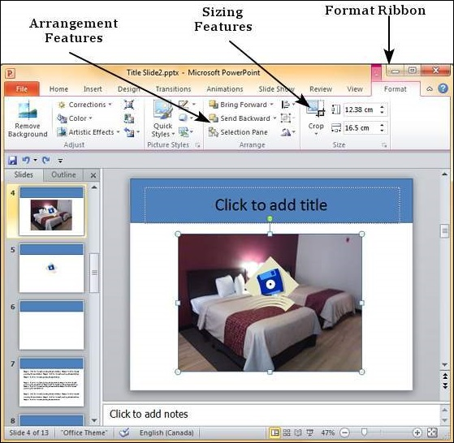

PowerPoint offers many image formatting features that can help shape the image to suit your needs. The picture formatting features in PowerPoint can be accessed from the Format ribbon once the picture is selected. The formatting features are grouped under the Arrange and Size section in the Format ribbon.

The following table describes various picture arrangement features available in PowerPoint.
| S.No | Feature & Description |
|---|---|
| 1 |
Bring Forward Moves the picture layer up. Bring Forward moves the picture up by one layer, Bring to Front makes the picture layer the topmost |
| 2 |
Send Backward Moves the picture layer down. Send Backward moves the picture down by one layer, Send to Back makes the picture layer the bottommost |
| 3 |
Selection Pane This opens up the Selection Pane sidebar where you get a better idea of the layers and can work with arrangements better. |
| 4 |
Align Aligns the picture with various references in the slide. |
| 5 |
Group Allows multiple images to be grouped together to create on single object or ungroup them to split them into individual pictures. |
| 6 |
Rotate Rotate picture by a specific angle. |
The following table describes various picture sizing features available in PowerPoint.
| S.No | Feature & Description |
|---|---|
| 1 |
Crop Allows you to crop the image. The cropping can be freehand, based on aspect ratio or any of the predefined shapes. |
| 2 |
Shape Height/ Width Used to change the height and width of the image. When you edit these parameters from the ribbon, the aspect ratio is always maintained. |